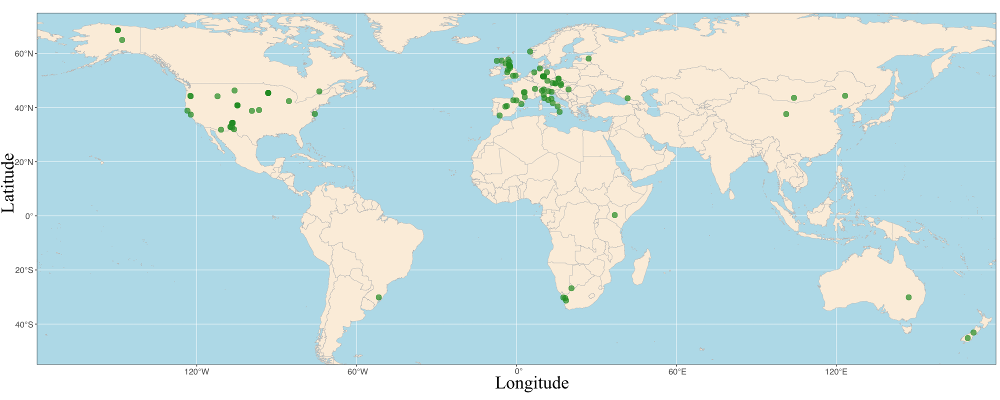

LOTVS

LOTVS, the LOng-Term Vegetation Sampling initiative, is a global collection of temporal vegetation data recorded in permanent plots. According to the project website, the platform currently brings together vegetation time series from 79 datasets, covering about 8,000 plots and roughly 4,500 plant species. Because the plots are repeatedly sampled in fixed locations over multiple years, LOTVS provides a strong basis for studying temporal community dynamics, species turnover, and different components of ecological stability across ecosystems and regions.